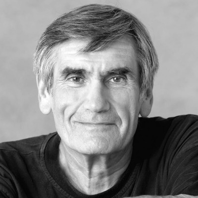

Milton, Ontario · Canada
Gina Hyunhee Kim
김현희
Certified Logotherapist
Mindful Dialogue Practitioner
NVC Facilitator

Milton, Ontario · Canada
김현희


About Gina
I believe counseling is not simply a profession — it is a lifelong calling. Drawing from a profound personal journey of resilience and recovery, I walk alongside my clients as they find their own path toward meaning, self-expression, and inner peace.
Integrating Viktor Frankl's Logotherapy with Marshall Rosenberg's Nonviolent Communication (NVC), I offer a holistic, heart-centered approach that helps individuals break free from negative emotional cycles and build sustainable, meaningful relationships.
“Between stimulus and response there is a space. In that space is our power to choose our response.”
What I Offer
A safe, confidential space to explore your inner world. Together we address depression, anxiety, relationship challenges, and life transitions using Logotherapy and NVC principles to help you rediscover your purpose and strength.
Facilitated group experiences centered on Nonviolent Communication. Participants learn empathetic listening, authentic self-expression, and compassionate conflict resolution through guided practice and reflective exercises.
Specialized support for high-risk individuals navigating severe depression, divorce, grief, and suicidal ideation. My approach combines professional expertise with genuine compassion to guide you toward stability and resilience.
Drawing from Viktor Frankl's foundational work, we explore the unique meaning in your life's experiences — including suffering — to cultivate a profound sense of purpose, freedom, and responsibility.
Sessions available in both English and Korean. For Korean-speaking clients navigating life in Canada, I offer a deeply culturally sensitive space where you can express yourself in your heart language.
Custom NVC and emotional intelligence curriculum design for organizations, churches, schools, and community groups. Bringing evidence-based communication tools to your team or congregation in an accessible, engaging format.
My Approach
“Every person carries within them a seed of meaning waiting to bloom. My role is not to fix, but to illuminate the path so you can find your own way forward.”
— Gina Hyunhee Kim
My Story

In childhood, quietly listening to a friend's small worries became the first page of a lifelong calling. A warm word from an elder — “thank you for listening to me” — stayed with me ever since, and listening to others slowly grew into both a habit and a longing within me.

I took my first steps into society as a kindergarten teacher, beginning a journey of meeting and nurturing young children.

As director of a childcare center, I began a new chapter — counseling parents, meeting fellow education leaders, and shaping a vision for early education while learning the fundamentals of running an institution.


After marriage, I relocated to Canada and began a life of service — running a Korean language school and leading within my church community. I helped Canadian-born children of Korean heritage rediscover their roots, while guiding a community of faith.


Short-term mission work carried me from China to Germany, Mexico, and Indigenous communities across Canada. Languages and cultures differed, but listening to people's stories and offering comfort felt as natural — and as joyful — as breathing.


I had the privilege of introducing traditional Korean tea culture to Korean children adopted into Canadian families — a journey born from deep empathy with adoptive parents who wished their children would never forget the beauty of their birth heritage. Watching the children discover their identity in the fragrance of tea remains an unforgettable grace.

A sudden car accident — severe enough to require emergency helicopter transport — brought everything to a halt. Treatment then revealed thyroid cancer that had spread to the lymph nodes, leading to surgery and a long battle with illness. The limits of my body forced me to set aside the work I had so passionately carried.

In the depths of that difficult season, I was given the chance to care for a Syrian refugee family who had arrived with only a few bags. Joining a team supporting their resettlement, I walked alongside them for years — and felt my own inner joy and vitality return. In caring for others through my own pain, I found my own healing.

Ten years after the accident, I finally underwent surgery to replace my shattered shoulder with titanium — a procedure long delayed until my body's balance allowed it. With that lingering pain finally released, I began preparing, body and spirit stronger than ever, for a new leap forward.

Every step of this journey has been a stepping stone toward deeper empathy and a truer understanding of connection. Today, I carry that lifelong habit of listening into the discipline of Nonviolent Communication — opening spaces where conflict becomes understanding, and wounds become healing.
Foundations of My Work
Founded by Marshall B. Rosenberg

Nonviolent Communication (NVC) is an approach to compassionate connection developed by American psychologist Marshall B. Rosenberg in the 1960s and 70s, carried forward today by the Center for Nonviolent Communication (CNVC). NVC rests on a simple premise: beneath every action, judgment, and conflict lies a universal human need — and connection becomes possible the moment we learn to hear it.
Rosenberg called it a language of the heart — often described through the image of the giraffe, the land animal with the largest heart, listening for feelings and needs instead of the reflexive, judgment-driven “jackal” language most of us were raised speaking.
“What I want in my life is compassion, a flow between myself and others based on a mutual giving from the heart.”
— Marshall B. RosenbergDescribing what happened without judgment or evaluation.
Naming the emotion the observation stirs in us.
Uncovering the universal human need beneath the feeling.
Making a clear, doable, present-tense request — not a demand.
Founded by Viktor E. Frankl
Logotherapy is a meaning-centered approach to psychotherapy founded by the Viennese neurologist and psychiatrist Viktor E. Frankl. Known as the “Third Viennese School of Psychotherapy” — following Freud's psychoanalysis and Adler's individual psychology — it holds that the primary drive in human life is not pleasure or power, but the search for meaning.
Frankl developed his theory before the Second World War, then tested it against the darkest limits of human suffering as a prisoner in Nazi concentration camps. His memoir, Man's Search for Meaning, became one of the most influential books of the twentieth century — a testimony that even in extreme suffering, a person retains the freedom to choose their attitude and to find purpose.
“Everything can be taken from a man but one thing: the last of the human freedoms — to choose one's attitude in any given set of circumstances.”
— Viktor E. Frankl, Man's Search for MeaningWhat we give to the world through work, creativity, and accomplishment.
What we receive from the world through love, relationships, beauty, and truth.
The stand we take toward unavoidable suffering — meaning found even in pain.
Common Questions
Logotherapy is a meaning-centered form of psychotherapy developed by Viktor Frankl that helps you find purpose even through suffering. Rather than only treating symptoms, it explores what gives your life meaning — through creative work, relationships, and the attitude you choose toward hardship.
NVC counseling uses Marshall Rosenberg's four-step framework — observation, feeling, need, and request — to help you express yourself honestly and listen with empathy. In session, we name what's happening without judgment, identify the feeling and unmet need beneath it, and turn that into a clear, actionable request.
Yes — sessions are available both online and in person. Many clients across Ontario and Quebec meet virtually, while local clients in the Milton area can also arrange in-person sessions.
Individual sessions run 60 minutes, and group workshops run longer with 6–12 participants. The number of sessions varies by person — some find clarity in just a few, while others continue longer-term work. We'll discuss a plan that fits your needs after the first conversation.
Sessions are offered in both English and Korean. Korean-speaking clients navigating life in Canada are welcome to express themselves in their heart language throughout the process.
Every message is read and answered personally, usually within 1–2 business days. If your inquiry is urgent, please note that in your message so it can be prioritized.
Get in Touch
Reaching out takes courage. Whether you have questions or are ready to begin, I welcome your message with warmth and without judgment.